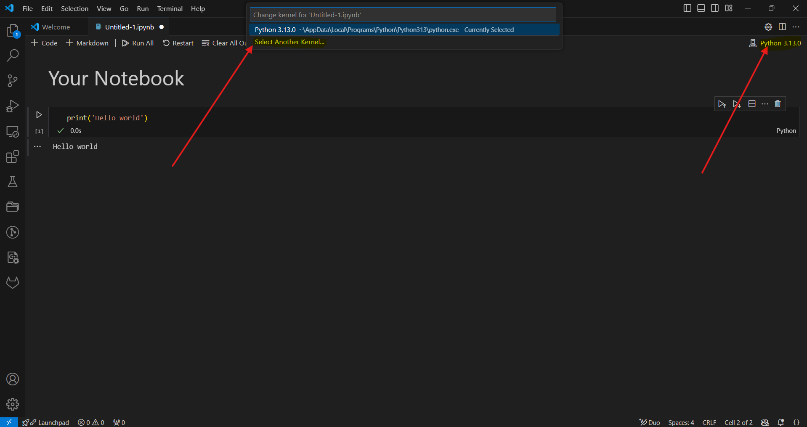

Quick Start
This section is designed to guide the user on how to install the package and use the Jupyter Notebooks. Once the user has git cloned the repository into their local machines, the user can comply the following steps:
Installation Guide
1. Create a Virtual Environment
Run the following command to create your virtual environment:
python -m venv <your_env>
If the above command fails, please try:
python3 -m venv <your_env>
Replace <your_env> with your preferred environment name, e.g., dual_venv.
2. Activate Your Virtual Environment
Activate your virtual environment with:
source <your_env>/bin/activate
To deactivate your environment, use:
deactivate
3. Install the Package
You can install the dual_autodiff package in two ways (ensure your virtual environment is activated):
Using pip:
pip install .
Or, if you wish to install in editable mode (useful for development):
pip install -e .
This will install both the pure Python and the Cythonized versions of the package.
Using wheels:
pip install wheelhouse/dual_autodiff_x-0.1.0-cp312-cp312-manylinux_2_17_x86_64.manylinux2014_x86_64.whl
Alternatively, navigate to the wheelhouse directory and run:
cd wheelhouse pip install dual_autodiff_x-0.1.0-cp312-cp312-manylinux_2_17_x86_64.manylinux2014_x86_64.whl
Using the Notebooks
Once the user has successfully created a virtual environment and installed the package, to use the notebooks it is required to select the environment created in the kernel. Now the user should be able to run the Jupyter Notebooks (Visual Studio Code is recommended, You can install VS Code by visiting the official Visual Studio Code website).
{kind=link}